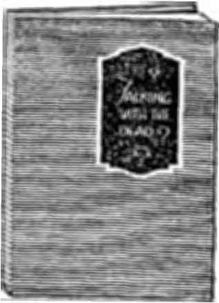

February
fSBi PtMuhtd gtury oih*t Inn' wm oi 2265 Broadway, Wlfyto Fort J*, U£jL Tob Cent* * Cbyj—gLM • Tatf Foreign. Sabrafptloa Price $24)0
VOX.CMB 1 WEDNESDAY. FSBRtLUtT IS, IPty Kentas* XI CONTENTS of tho GOLDEN AGE LABOX and ECONOMICS
Binding Man la Bundl«u..323 PrwWar OcdltioM ,.,,, ,33R
Middlu-ClnM Workers ------324 Knocking Out ths
Government Workers ........323 Foundation —..---------
SOCIAL and EDUCATIONAL
Ci tv Grtrbftve for Hogs—327 Schwab Not Pule Strtkea
England’s Child Stares......327 Living la New Tort.—
The Now Soioon....... .......223 Ou Reading Aloud
MANUFACTURING sad MINIKO Fuel Engineering .........331 m Blast-Furaaes
Cheaper 1 radium .— J3“l
FINANCE, COMMERCE. TRANSPORTATION Tbs Law of the Profits......333 public Utilities Treabled—334
Improved Highway Laws..234
POLITICAL DOMESTIC ind FOREIGN Fanners La Polities__________333 Anarchy—Common
Of Pvo/errM ? - -ITT
AGRICULTURE and HUSBANDRY
Beekeeping, A ProfaMioa..33F Diener's Giant Hybrids____340
l-Ittut Wheat Surrtvra......339 cSid.__L__J4S
Good Bye to the Horse.......340 An EarttUy Image..
■ SCIENCE sad INVENTION
Ufa of the Banri&na..--------__-------
TRAVEL end MISCELLANY
The Secondary Colors-------342 A Tragedy oC Lent Age... .343
HOUSEWIFERY sad HYGIENE
Twenty Millions for Medics 343 Mafijne and Adenoids and Osteopaths..343 Other Ml
RELIGION sad PHILOSOPHY
Ha> the Good Shepherd Juvenile Bible Study..__..34S
More Than Oue Fold 7.-345 Invocation to Liberty ——-34R
tc* Carrs a C^rr^UQ a Yus.
Make romlttsnces to TAs GoMsa Aye.
Golden Age =—=ssggg=gSMBa=a^g-^. Volume I . New York, Wednesday, February 18, 1920 Number 11
BINDING MEN IN BUNDLES
WE LIVE in a time when it seems as though almost everybody was in a union of some kind or trying to get into one, and the business and even the legislation of the world is becoming not so much a matter of dealing with individual problems as dealing with masses of men gathered together for the pursuit of some common object or objects which they have in view. ' To the true American there is something dangerous, something sinister, in the influence of lobbies at Washington or at other legislative centers. Once these lobbies were largely'of a personal nature, but this is rapidly changing. The first pronounced step in the way of what might be called a permanent corporate lobby at Washington was the location in that city of the general headquarters of the American Federation of Labor. More recently the Farmers of the country have also established permanent headquarters in the same city, and now comes the announcement that the representatives of Capital have decided to do the same thing.
It seems as though there is now only one great group at Washington that is not separately represented by a lobby, though perhaps that group is best represented by the Congress itself. We refer to the great middle classes who are ununiomzed. If Congress does not remember their interests in dealing with the representatives of Labor, Farmer and Capital, then they have no representation at all.
In Englknd,\where unionizing has gone much further th^n in the United States, a strenuous campaign is under way to organize the millions of clerks, bookkeepers, physicians, surgeons, dentists, newspaper men, ministers, lawyers, and others composing the middle classes, so that in the constant battle going on between Labor
and Capital they may not be forever and always the only real losers. The movement is meeting , with some success, though not as much as its '* friends hoped; for this class particularly dis- . likes to have its progress marked by the strife which has been inseparable from the forward steps of Capital and Labor. But the logic of ; events seems to be gradually pressing them into , the union ranks. They cannot hold out against the financial pressure which the high cost of > living is forcing upon them.
The wise man who knows just where the lines ■ of love and justice should be drawn in this mat- , ter of unionism should arise and bow; his where- I abouts is not generally known. It must be admitted that there are many employers who, no matter what their profits, never make a conces- . , sion in wages, or take any other step in the direction of the betterment of those of their fellow men who are working for them, until they are forced to do so, either by the men them- ; \
selves or by the public opinion of an aroused -and indignant people. There are plenty of employers who see nothing inconsistent in holding ? every employe down to the barest wages that will support life, while they themselves are rolling in every conceivable luxury. It is only in time of war or other national peril that such / “citizens” ever get anything like a comprehensive view of their proper relations to their fellow men; but as soon as the peril is over they go back to the same old selfish way of looking at things as far as the worker is concerned.
It does not appear to be sound wisdom to leave wages to the formula of begging, pleading and coaxing from men of such a stamp what they ought to be glad to give readily; and it is inevitable that in any place where aa many as
fifteen or twenty workers are employed they are liable to get together, sooner or later, and for their common good make such overtures as will protect them from the most glaring features of industrial injustice. A number of workers, associated together, can do for the whole what singly they would not be able to do for any. At the same time it is a violation of liberty to force anybody to join a union-
It is un-American for employers who are organized with other employers to discharge their employes for organizing themselves; and it is equally un-American for self-appointed committees of "business men"’ to get together, as they occasionally do, and railroad labor organizers out of town under the specious claim that they are thereby protecting America. Such protection of America will do far more harm in the end than it will do good. We have had too many "respectable” plug-hat mobs, and the people are getting thoroughly tired of them. We do not want extremists of either kind, Labor or Capital, in this country.
One of the charges that is frequently brought against unionism is that the members of labor unions do not live up to their bargains, but frequently disobey their own officers and violate their contracts by going on strike when they have agreed not to do so. Such instances frequently occur, and do the unions more harm than any other one thing. Any union which fails to carry out its contracts alienates public sentiment, and when any body of men in a republic forfeit the approval of their fellow citizens they have lost their case. The public cannot and should not look with favor upon any body of men that violate their contracts.
There is a limit, too, to the things that a labor union can properly demand. The limit to that demand is not all that can be forced from an ■unwilling employer. When workers get to the poirit^jvhere they demand for themselves the total receipts of business, regardless of the rights of others, the whole fabric of civilization will crumble unless they are made to see that the rights of others are as real as their own, and are hot to be lightly trified with or bartered away by any one.
On this point Mr. William B. Colver, of the Federal Trade Commission, at the annual convention of the National Coffee Roasters' Association, had this to say: ‘‘Organizations of groups of men for mutual benefit are proper and ( are to be encouraged np to the point where such organizations interfere with the general welfare and public interests; but all rights yield to the one dominant right—that of the general wel-fare. All organizations are useful so long as they function in and for the public interest.”
Noting that restless and reckless Labor makes Capital restless and reckless, some have proposed that labor unions should be required to incorporate themselves, so that their bargains ; could be enforced. Labor objects to this, hold- * *
ing that it would be subject to constant legal persecution by avaricious employers.- Never- j theless, the members of labor unions are not a separate class of people. They are a part of * the whole people and should be as ready as others to bear their fall share of the load.
OT only is the organization of middle-class „■* workers making progress in England, and r
in Germany, where it is said that the largest organization of office workers in the world (350,-000 members) has been perfected, but the same * thing seems to be going on in America, although not to the same extent as abroad. . The movement has spread to Spain, where newspaper men of Barcelona and Madrid formed unions, and affiliated with the printers, demanding monthly minimum wages amounting to $58.50. This does not look like much when compared with the wages now paid in America; but the cost of living in Spain can hardly be as great as it is here or the workers could not live on the wages desired, to say nothing of those they actually receive at .present. _
In this country some of the middle classes that have organized and affiliated with the American Federation of Labor are the News Writers of Boston (already mentioned in these columns), the Musicians, Actors, Insurance Agents, Stenographers and Bookkeepers of New York, the Technical Men of New York and Chicago, the Scientists and Specialists of Washington, the Teachers ’of Chicago and the Professors of Harvard. In connection with the latter movements Miss Helen Taft. Acting President of Bryn Mawr College, declared that sho wished that the professors of the whole country would go out on strike for higher wages, so as to wake up the people of the country to the
injustices they were then bearing. In New York City there is also a small teachers’ union, but it is estimated that only about 10% of the 23,000 public teachers in the city belong to it. Although there was a great deal of unrest among the teachers in the Fall of 1919 it was corrected somewhat in New York state by legislation that served as a partial remedy.
Occasionally the union organizers attempt the impossible. Efforts were made to organize the physicians in Greater New York; and at one time it was claimed that 200 physicians in the Bronx had affiliated themselves with the Aiw-ican Federation of Labor, so as to bring about union conditions for physicians employed by insurance companies and hospitals, and to fix union rates for physicians throughout the city. But the movement was unsuccessful, as were similar efforts in Brooklyn. The registered drug clerks, however, organized a union and went out on a strike for $50 weekly and an eighthour day, which they won.
Attempts were also made to organize the bank clerks and other clerks in the financial district, many of whom, when they work evenings, either one hour or five hours, receive no other compensation than the usual 75 cents or $1.00 "supper money’. The clerks wish a regular six-hour day, with a scale of wages for overtime, Sundays and holidays. But at the Christmas holidays of 1919 some Wall Street houses distributed as bonuses among their clerks amounts as high as $1100 apiece; and there is an argument against unionizing, in sneh a bonus, which the ablest spellbinder cannot effectively meet
RYING to take an unbiased view of matters, it is not greatly to be wondered at that
many workers in various departments of the Government have been thoughtlessly led into embarrassing positions in the current of unionizing tfi&t has been sweeping over the land. The trouble really started when the American Federation of Labor, which had always previously refused to charter police unions. decided to do so at the anpual convention held at Atlantic City, June 9-16, 1919. But it was at Boston that the "beans were spilled when the newly organized police union endeavored to try its strength. President Wilson described the strike as a "crime against civilization*’, which it turned out to be; and the Protestant Governor Coolidge, of Massachusetts, with great severity, we think, refused to take back any of the striking officex-s (most of them Roman Catholics), declaring that "to place the maintenance of the public security in the hands of a body of men who have attempted to destroy it would be to flout the sovereignty of the laws the people have made”. Massachusetts endorsed his stand.
But possibly the severe lesson in. Boston (where the new officers were granted the increased pay that the old officers desired) was necessary to check the tide that was then rising in other places. New York City was perilously near the same difficulty, but an agitation in the papers and increased pay for the patrolmen relieved the situation. In Buffalo also the efforts to form a police union were frustrated by giving the men an increase in pay before they got ready to demand it. In September there were thirtyseven American cities in which the police were unionized;but with the exception of Boston, Los Angeles, Portland (Ore.), Wheeling and Oklahoma City none of the cities were the largest in their respective states, and Wheeling and Oklahoma are both relatively small cities.
The matter came to a head effectively in Washington, D. C. There the District Commissioners took the position that they were quite willing for their men to organize, and that they approved of the principle of collective bargaining, but that they would not have on the force men combined or associated with any other labor organization. The police took the matter to court, asking for an injunction to prevent their discharge because of membership in the union.
The subject was threshed out in the Semite and in the course of the debate Senator Myers said: “Within two years we shall have a soviet government in this country unless something is done to check the movement for unionization. The police force of every city and town in the United States will be unionized and affiliated with the American Federation of Labor within sixty days if the police in the District of Columbia are permitted to unionize. The next stop will be to unionize the army and navy. and they will have just as much right as the police. Then the next step will be a soviet government.'*
There is a growing belief that Government employes must not become affiliated with other labor organizations if the integrity of the American system of government is to be preserved. Postmaster-General Burleson in his annual report has even requested Congress to repeal a - law passed in 1912 under which postal workers have understood and utilized the right to organize. The report states that one of the purposes of labor unions is to coerce the employer, and that when such employer is the Government such an association is aimed at the Government and is inconsistent with the performance of public service and is not a true American spirit.
The gathering together of Labor Forces, Capital Forces, Farmer Forces and now the possible * Middle-Class Forces all reminds us of the Lord's parable in regard to the end of the age, that it would be accompanied by a binding together of the tares, professed Christians, for the purpose of destroying them as tares—convincing them and everybody that they were not Christian, properly speaking; and proving, as we claim, that the only remedy for earth’s tangled affairs is the speedy coming of the Golden Age for which we have all so long prayed, “Thy kingdom come, thy will be done on earth as it is done in heaven”. Then we shall see that all this gathering together of the elements of society into different bands was inevitable, and was divinely foreseen as a necessary preparation for the inauguration of that kingdom of peace, joy and divine blessing.
Pre-War Condition* By d. r. Pierce
OW many times we see articles in the daily press, reminders of the times preceding the
war, calling attention to the then cheap prices of necessities, and the variety and quantity of what are now regarded as luxuries. These include food, clothing, fuel, housing facilities, amusement and recreation, education and travel.
Many people are coming to be “stand-patters”, desiring to use all the machinery of religion, goverttn^nt and industry to return the world to the conditions prevailing in the pre-war days, not recognizing the totally unsatisfactory ends attained in those times, as well as now.
A cartoon recently appeared in a prominent daily, whicii if\printed by a so-called radical paper woulckhave brought down the calumny of the entire “conservative” press, as being intended to produce unrest. It had for a central figure an office worker seated at his desk, with a ball-and-chain attached to his ankle, with the terse suggestion that “whoever is satisfied with his present job, is like the person behind the prison bars, tied for life to a ball-and-chain”.
In Exodus 16:3 we read that the nation of Israel murmured at the action of the Lord in leading them out of Egypt, where they had plenty to eat and nothing to worry about, not remembering that they were on the way to the promised land, “flowing with milk and honey”. So also the people now who desire to return to the pre-war conditions, forget that we are on the way to the Golden Age and that no possible force can turn mankind back to the conditions that are now forever past
ABOUT 30,000 Italians have left for home
• recently, and comparatively few have immigrated. Other nationalities are said to be planning to go to Europe or some other continent than America as soon as conditions for travel ease up. In spite of the fact that the dove of peace is looking for a place to roost on, the huge net after-war immigration shows no signs of materializing. Miners are giving up mining and going into work where they can make a good living for their families. Steel workers are getting out of the industry and into other lines. Farm laborers are quitting the farm. Lumber jacks no longer like the rough, hard life of the camps.
If the world war and the unrest of a pseudopeace are driving common labor from its task, or making work distasteful, from a sense of restricted liberty, who is going to do the hard manual labor of railroad building, foundation work, milling, or the farm? Common labor-must not be despised. Conditions in America have always hitherto been attractive to the hard workers of Europe, who-have felt that here was a chance to make good for themselves and their families. But now the news is going through Europe that this is not as good a place as it used to bo for poor men. Americans must beware not to knock out the foundation of their industrial structure.
A better acquaintance with the stranger within our gates brings out the fact that he possesses qualities as good as are to be found. A little of the brotherly appreciation that will characterize the Golden Age would go a long way now to oil the joints of the social machine*
|| SOCIAL AND EDUCATIONAL
k --------- ----------------------------------
KKON, Ohio, lias had the usual expensive and unsatisfactory experience with the disposal of city garbage. In by-gone days the citi-zenesses burned or buried their scraps, left them out for the occasional itinerant private collector, or threw them into the back street. In 1916 the city started a reduction plant of twenty-five-tons-a-day capacity. The customary system wag to be followed of digesting the garbage with steam, drying it, running gasoline through it to recover the fats, and burning the dried residue. The collection was awarded to a private concern, the Akron Garbage Collection Company, and the operation ot‘ the plant to the Akron Garbage Disposal Company, which was paid $3.12 a ton for collecting garbage, and which paid the city $8'200 annual rental for the $116,000 plant. The city grew rapidly, and the company increased the daily capacity of the plant to forty-five tons.
The collection service never proved to be satisfactory, either to the citizenesses, or to the company; for it was conducted at a loss of about $£000 a year. The disposal company cleared about $1300 a year, making the net result of the operation to the companies a loss of some $3800, a discouraging outcome on disagreeable work done at groat effort. The garbage companies finally took advantage of a technicality to terminate their contract and end a losing venture; and the plant came back to the city, which paid nearly $100,000 for the contractor's invested interest in the plant and for the teams, trucks, barns and bins.
The plant was the source of bad odors that affected two residential sections of the rapidly growing city, and were liable to give more serious offense, as the river boulevard and further extensions approached and passed the location of the plant. A new plant was figured on of 100 tens capacity, with an outlay of $472,*300 and a net annual cost of nearly $35,000, with no tolling soon a city with the expansive capacity ot^Akrbn might again surround the plant— quite a serious affair to people that buy or rent homes only to breathe day and night the perfume of steamed garbage.
There is one garbage disposal plant that can be moved at will, and that is a herd of hogs. It has unlimited capacity, replaces itself, and can be sold at a profit, provided the garbage is obtainable at a cost, that leaves a margin on tho selling price of pork. So the oily fathers \ decided on the new style plant; and, as they were unwilling to undertake the responsibilities * connected with a Log farm, advertised for biis on die garbage, received two responsible hitls, and turned the city garbage over to the new plant under private ownership. Unfortunately there is no plant of half a million dollars' cost to be built; and so it is decided that this arrangement is only a temporary expedient, although thoroughly convenient, econoinieal and suited to the interests of tho common people, the taxpayers. Whether tho consideration of the practical impossibility of any substantial rake-off from the inexpensive hog proposition enters into the temporariness of the new idea, ia not stated, but it is well known that a politician has at leiwt some chanee when there is a costly plant to be built and operated. However. for a while the Akron citizens are getting this valuable Ferric* for a reasonable price.
It is an old story, this of oppressing the helpless common people, but it mil soon come to an end forever nndor the gracious arrangements of the Golden Age: ’’for they [the people] shall cry unto the Lord because of the oppressor*, and he shall send them a Savior and a great One [Christ the Head of the government in the Golden Age], and he shall deliver tlienfL— Isaiah 19:20. .
IT IS useless to claim that a child laboring in a factory is anything less than a slave, either of conscienceless or poverty-stricken parents or certainly of the often heartless or brutal foremen or forewotueu in charge of the work of driving th*? lit th- oic-^ to got the pound of fk?sh that the law of profits requires. Children ought not tn be allowed, much less forced, to work in such an environment as the factory or mill. The child's place and right is in the sunshine, where it can exercise, work, and play until little muscles and nerves are strong and sturdy for the life-work before them.
But England has its cliild slaves by the thousands, and British investors are coining the life blood of little ones into dividends. Nobody cares; for does it not pay to work the weak little arms and fingers better than those of the grown-ups who demand more money! So in Manchester seven-year-old children labor ten hours a day for 11 cents; and boys and girls, that should at least be at school and getting a chance in life, are slaving ont their thirteen and fourteen-year-old brains and bodies for less than a dollar a week of forty or fifty hours. Of sunshine, green fields, good comfortable beds, and of the joy and gladness the dividends bring to a few rich kiddies, these thousands of children know nothing—and why should they, when they can so early become “useful” members of society and earn dividends for some one else!
The “great” city of Manchester boasts 6000 little workers of seven to fourteen years, including 1500 girls. Warrington has the distinction of having 700 child slaves. No mill city exists in England that cannot point with pride to its hundreds or thousands of these invaluable infant pillars of the industrial and social order. Giris work twenty-one hours a week for JI cents, or half a cent an hour. Others labor from 4:15 p. m. to 10 every night and fourteen hours Saturdays for 2S cents (with tea and sapper) for the week. Little boys of eight slave ten and one-half hours a day for 20 cents. They labor in all kinds of places—in Deansgate 650 deliver milk. 2051 run errands, 319 are in barber shops, 30 in pawn broker shops, and SS5 serve as spare-time household servants.
The fact that these children have been reduced to slavery is attributable largely to the greed of their parents. In most of the places where child slavery is practised, the parents earn ample wages, and there is no economic excuse for the ruining of the lives of the little ones to add ^shilling or two a week to the family income. But employers willingly cooperate in this destruction of coming manhood and womanhood, for how else could the management of businesses big and little make good a showing on aividtend day! Fortunately there are laws of ’Parliament which localities can lake advantage of, though the Town Council encounters powerful influences when it attempts to prevent any of this child slavery.
But the Golden Age is close at hand when such iniquities shall end. Now God is pictured as looking down upon earth and seeing these tilings and saying, ‘T looked, and there was none to help; and I wondered that there was none to uphold; therefore mine own arm [power] brought salvation unto me [from such evils]; and my fury [against such evildoers] it upheld me”. (Isaiah 63:5) Again, “He [Christ in the Golden Age] shall judge [rule over] the poor of the people, he shall save the children of the needy, and shall break in pieces the oppressor”. —Psalm 72:4.
HE theory of some would-be philanthropists regarding the alcohol addict is much the same as that a person prohibited from stealing needs a substitute for stealing and that philanthropy or religion should furnish the substitute. This may explain the effort to supply the “kickless” saloon for the drinker.
In some respects this is true. The drinker that went to the saloon for good fellowship because he craved it will go somewhere else to find it. As there are no places worse than the saloon, he is obliged to go to some better place. Consequently he is to be found in the pool room, the men’s club, the street corner, the Y. ML C. A., or almost anywhere with other fellows be likes. By thousands he is joining the Knights of Columbus and other secret societies where the social instinct can be gratified and the inspiration of crowd psychology enjoyed.
The man who drank because he likes to get drunk is not going to a liquorless saloon. He may know where he can obtain, raisin, peach, prune or dried apple whiskey, and get a product which, though far inferior,satisfies an abnormal-appetite. Not the mahogany bar, the shiny brass foot-rail, nor the piles of shining glassware will tempt into the sacred precincts of the prohibition saloon the lover of alcohol for its own sake. That is not what he desires.
It is suggested that the new bar-room will furnish work for Y. M. C. A. assistants with whom might be associated “as a sort of lowbrow canteen worker” the former bartender. Inspirational work among saloon devotees is considered desirable by the advocates of the new' saloon; for, say they, “the bartender himself was usually a good practical psychologist of human nature, and not only prepared the favorite tipple for big customer but also with quick, 1 hough sometimes spurious sympathy furnished him with the mental comfort he needed”. It is not regarded well for those behind the new bar io wear a Y. Al. C. A. or other uniform, but ‘those who have charge must assume some of the nature and behavior of ordinary individuals and avoid the wearing of special dress or uniforms suggestive of inhibitions and prohibitions of certain aspects of society that have grown to be intolerant of the average individual’’.
It 5s hard work getting up a refined substitute for vice. The better way is to get the mind of alcohol's devotee on something better, not to remind him constantly, by a substitute, of what he has lost and still craves.
CHARLES >L SCHWAB, head of, the Bethlehem Steel Corporation, at a banquet in the Waldorf-Astoria recently made the following statement:
“A good many people these days are ‘seeing red’. Some talk as though the whole world is threatened with overturn by Bolshevism. I am not one of those who tall; or think that way. And particularly here in America, I have the greatest confidence in the sound and level-headed common sense of the American working man and of the American people. The more the Bolshevists talk and threaten destruction the more will onr people see through all the sophistry preached to them, and stand adamant for America continuing to be a land of Law, of order and of opportunity,”
Mr. Schwab is admittedly one of the wisest men in the United States, as he is one of the most successful, and in the above words we think lie has spoken not only with wisdom but with a moderation calculated to make some professional patriots stop and think. One of the greatest dangers in the United States today is the man who "sees red" and fans the unrest of thc^country into a flame by denying to his fellow citizens the commonest privileges of free speech, fr^ and free assembly. Such men should be Iciiked up immediately.
It nef‘dh >s 1’0r us to assure the readers of The Couje'n Ace that we are not “Bolshevist^1 —have^no leanings in that direction whatever. Although we bdieve in the coming kingdom of our Lord and Savior Jesus Christ, as do all professed Christians, yet we believe the Lord will have his own way of ushering in that kingdom; and we are certain it will not be by any acts of violence such as have been attributed to . the Bolshevists. With such men as Mr. Schwab expressing his confidence that the United States is in no danger whatever of Bolshevism (an opinion echoed by so able a journal as the New-York Worid) some of those who have so much to say about a coming red terror here in America make themselves ridiculous. If we ever do have a red terror here it will be directly due to having been induced by a needless and out-rageow? white terror, started for the purpose of concealing and retaining from the common people the profits of the world war.-
ROADWAY, big hotels, theaters, and beautiful churches are not all there is of New
York. Neither are the Riverside Drive apartment palaces representative of life in the big city. Noris a position in the lofty office buildings typical of jobs at which most New Yorkers work. For New York is a city of poor people; of human beings striving desperately against rapidly climbing prices and rentals and slowly creeping wage raises. He who would live in New York must exchange the genuine things of suburban, small city, village or country life, for the slightly stimulating environment of city contacts and a host of disadvantages.
Life in a village may seem dull enough; but it is bright beside the somber picture of the average worker's New York home painted by the Women’s Municipal League of the City of New York, in an investigation under the direction of the New York State Reconstruction Commission. We quote: ____
“In one block there were 1050 families, 105 white nd 335 colored. Rents were from $13 to $22 in the Phipps' houses (better houses built by a wealthy philanthropist), and from $3 to $14 in the old houses. The Phipps' houses can accommodate only a .email proportion of the people who would live there if they could. Many of their i the Phipps) tenants, it is true, find the rent bur-der^nmc, but by economizing on other necessities they manice to lire there in cteanlincw and decency. The character of the other houses varied with their owner?, but in general they were old. dark, dirty and not fit lor human'habitation? A high grade of cleanliness was not po.-fiihle in the best of them, and in the worst there was nrsctiruUr no sanitation. The cellars were damp aud full of rac£. the halls were not even lighted by gas jets, the four flat? on each floor were served by two toilets in the hall, the plumbing was old and often out of repair, 60 that the air was foul. The airshafts and the narrow court spaces between the rears of the tenements were littered with the waste and garbage which the tenants hud thrown out. Physicians attending cases of illness in the block traced them in many instances to this filth. Except in isolated cases, no great overcrowding of individual families woe found and little of the extreme poverty wliich the inexperienced investigator would expect to find in houses of this type. These were the homes of the general run of wage-earners in New York. They are possibly a little better oif with the high wa^es commanded by labor today, but their personal standard.’ had not risen, inasmuch as there were no better houses to lie had.”
A number of remedies are suggested by the Reconstruction Commission:
1. “Relaxation of restrictions upon building imposed by the tenement-house laws and building codes.” This would result in a little more building of a still inferior type. It is hard to keep the houses for the poor decent to live in, and unscrupulous builders and landlords would ba quick to make things worse at less cost to themselves it* granted the opportunity.
2. ''Raising a fund, by general subscription for new tenements.” Such a passing of the hat around savors of the begging methods of religious institutions, and would be likely to result in the minimum amount of funds.
3. ""Exempting certain types of buildings and mortgages thereon from taxation for a period long enough to encourage investors to put their money into them." It is partly the high taxation of this class of investments that has kept money out of building operations, and the opening of this door would doubtless accomplish something in the right direction. Er^n then, the high cost of building materials and labor stands as an almost impassable barrier to the employment of funds in building.
4. "State credits to encourage the erection of adequate accommodations for the lower-paid wage-earners.” This might be a first-class plan, yet it is "Socialism”.
5. ^ave die city buy up in advance cheap land in order to house the future population.’’ This plan possesses much merit and common sense, but unfortunately would "never do" here because it is. “Socialism”.
The plkin fact is that the poor and needy, to say nothin of the well-paid workers, are coming to a stone wall in the matter of housing accommodations; for there is not enough building going on to provide for the natural growth of popiflation, and building was practically at a standstill during the two years of the war. Either people have got to stop being born, or something must be done in harmony with the law and the customs received from the fathers. The country debates and investigates, and does it over again, but fails to build houses- The authorities exorcise the flames, but do not call out the fire department. Meanwhile the people begin to feel like a fifteen-year-old still in his ten-year-old suit of clothes.
Some day, in the Golden Age, the nations will learn that when the people need something done the regular thing will be to go ahead and have it done. It is the essence and spirit of the law that the people be taken care of, and properly provided for, but it is as true today, as when spoken of certain classes that the Master spoke of two millenniums ago, '‘Full well ye reject the commandment of God. that ye may keep yrnir own tradition, . . . making the word of God of none, effect through your tradition which ye have delivered: and mnnv such like thing* do ye” — Mark?:*), 13. ' ’
IT IS a deplorable fact that the custom of reading aloud has almost passed away and that with its passing, due to our modern habit of reading hurriedly and breathlessly to cover aS much ground as possible, the matter of an intelligent giving forth of the words read aloud and the matter of modulating the voice and the use of full tones where necessary, is fast becoming a lost art. In times gone by it was tho custom for a member of the family to rend aloud of an evening, and generally some work was selected that was a classic. In this way Htiy art of reading was acquired in its best estate, the various members of the family acting as critics, and at times harsh critics, especially when the paragraph read was not clear to them and they were a bit irritated because the meaning was not conveyed to them as they thought ir should have been. If this old custom of reading aloud was revived, what a profitable way It would be of spending the long winter evenings around the family fireside, provided the selection be au appropriate one, in harmony with truth and edifying to the listeners.
Few realize how much they actually lose by poor methods of speaking. There is no more .‘iTectnal way of improving one’s delivery than reading aloud the best authors.
MANUFACTURING AND MINING
WITH the gradual consumption of the most valuable and most easily workable fuel deposits of Great Britain, and the encroachments made upon the coal areas of other countries, great engineers are givingmore attention to fuel problems, and with good results.
In England Sir Charles Parsons has worked out the details of a plan for boring twelve miles into the crust of the earth, at which depth it ia estimated a perpetual source of limitless power could be obtained. The time required to sink this hole has been estimated at about seventy years, although some engineers believe it could be'done in forty years.
Meantime, other British engineers are discussing means for making a better use than heretofore of the gases generated in blast-furnaces. For some time, in the most progressive steel works, the plan has been followed of cleaning these blast-furnace gases by electro-static processes, and it is proposed to utilize this method more extensively. Gases thus cleaned may be used direct in internal-combustion gasengines, not needing, therefore, to be burned under boilers with the great losses in economy and efficiency attendant upon their use in that manner. They can and should furnish all the power required for the operation of all the steel works machinery, and may even be used to provide power for adjacent factories. The researches into fuel economy are going further, and steps are under way for a study of the slag problem, to see whether or not some way can be devised to recover and utilize the now wasted heat contained in the molten slag that runs from the blast-furnace in connection with the flow of liquid metaL
’These steps in economy and conservation are steps in the right direction. If the Lord of glory valued the miraculously created fish and bread so highly at the time the five thousand were fed, and later when the four thousand were fed, as^to ipake arrangements so that none of the foo4 should be wasted (Matthew 14:15-21, 15: 32 -38; 16: 9,10), how reasonable and right it is for us humans, who can create nothing miraculously, but who are wholly dependent upon what he has created for us, to use wisely for ourselves, and economically on behalf of our children, the blessings which God has placed within our reach.
We believe that at some time during the Golden Age, probably just when it is most needed, a plan vill be put into operation like the Parsons plan or some other good plan which will settle the fuel and power problem for all time.
IT IS a benefit to humanity worth noting when an important raw material is produced at lower cost. A few years ago vanadium would have been spoken of as a rare element, interesting because of its chemical peculiarities and for making dyes and ink. Today it is of great importance in the industrial world; for a small amount added to steel makes the latter very tough. Vanadium steel is one of the prominent products of the steel industry.
Ten years ago the methods of getting the element from the ores of Peru were so inefficient as to extract only 36%. This was later raised to 75%; but now the electric furnace has been tried, and gets 92%. The concerns that have been producing vanadium are enabled to work over the immense slag piles, and get enough out of them to yield one company alone a profit of $3,000,000 a year for three years to come. The public would be more interested if the improvement led to a lower price; but, as there is little competition, the-benefits of progress are likely to be absorbed almost entirely by the manufacturers, who, of course, are entitled to it, if they choose to follow that policy. In days when every one but the profiteer feels the stress of the cost of living, the addition of an extra dividend of $11 a share is greatly appreciated by the stockholders.
But in the Golden Age it will not be so. Every advancement achieved will be hailed by all the people as for the benefit of all, and not for a few, however proper that may be now. The great men will be those that do most for the common people. The great news in the papers will be the items about things accomplished for “all of us7'. Money will not be the chief thing, nor evert gold; for it is vhritten that “I [God] will make a man more precious than fine gold;
even a man than the golden wedge of Ophir [from which the Guest gold came]'7.—Isa. 13:12.
BLAST-FURNACE is always kept filled with iron-ore, coke and limestone. As the
coke is burned away and the limestone is melted in the hearth, the column above settles and fresh quantities are dumped into the top to maintain the supply. As the molten iron and slag run down into the hearth they separate, the lighter ftlag floating on the heavier iron.
Two tap boles are provided at different levels. From the lower of these the iron is drawn off into the pigbed or receiving ladle, while the slag is tapped into a tank of water know as a granulating pit, or into a slag ladle.
The air necessary for the combustion of the coke is forced into the furnace under a heavy pressure by powerful blowing engines. On the way to the furnace it is heated to an intense heat by being forced throught hot-blast stoves. This temperature, being added to the heat of combustion of the coke, adds greatly to the smelting power and decreases the fuel consump-? tion in the operation.
The gases resulting from the combustion of the coke are partially combustible and have a considerable fuel value. They are, therefore, drawn off from the top of the furnace, more or less perfectly cleaned and then bdrned, partly under the boilers to raise steam, and partly in the hot-blast stoves to heat the blast
A modern blast-furnace produces 400 tons of pig-iron every day, consuming 1300 tons of solid materials and 2000 tons of air in the process. There has been a change from the old-time rule-of-thumb plan of running a furnace to a method where everything is carefully weighed and all charges are mixed in accordance with calculations, based on chemical analysis of the raw ma-terials' and accurate calculation of the charges. If the slag is too silicious the pig-iron will be unsalable, while if it contains too much lime the iron ■will refuse to run from the furnace.
One of the most common ills of the blast-furnace is disorder arising from poor distribution, called scaffolding. Instead of descending uniformly the material adheres to one side mid builds out a pasty mass. Occasionally, parts - of this scaffold break off and fall to the hearth, deranging the working and damaging the quality of the product. A scaffold once formed tends to form again and become as bad as ever.
A slip in a blast-furnace is a sudden settling of the stock through a considerable distance, accompanied by a more or less violent puff of gas at the top. In some instances these slips are so serious as to throw out large amounts of lump ore, coke, etc., through the explosion doors especially provided for this purpose at the top of the furnace.
Other troubles to which the blast-furnace falls heir are freeze-ups in which the iron and slag set into a solid mass on the hearth, and which have to be opened by the oxygen blowpipe; steam explosions due to the water jackets leaking into the interior; break-outs and gas explosions; some of these are harrowing and frequently accompanied by loss of life. These blast-furnace troubles are not nearly as prevalent now as they once were.
The best method of casting is to tap the iron from the blast-furnace into a large receiving ladle, where it becomes thoroughly mixed into a homogeneous liquid. From this ladle it is poured into iron molds, which are carried on an endless belt. This method avoids the sand of the time-honored sand-casting method and secures perfect uniformity of composition.
The production of pig-iron, starting with nothing at the middle of the last century, has grown at the rate of 100% every decade, until now it is the largest single manufacturing industry (and the most spectacular), furnishing approximately one-fifth of the total freight traffic of the railroads.
The Scriptures show that even in the Golden Age certain lands of iron work will go on as usual, and this being so, pig-iron will be needed mid will probably always be produced, though we think not to the same extent as now. The statement reads, “They shall beat their swords into plowshares, and their spears into pruning-hooks; nation shall not lift up sword against nation, neither shall they learn war any more'’. —Isaiah 2:4.
During 1919, the production of pig iron in the United States (reduced by the steel strikes and coal strikes) averaged 34,000 tons per day. In 1918 the average output was 105,000 tons per day; in 1917 it was 104,500 tons; in 1916 it was 106,500 tons; in 1915 it was 81,000 tons; in 1914 it was 63,000 tons; in 1913 it was 84,000 tons.
FINANCE -COMMERCE-TRANSPORTATION~
IT SEEMS to be the logic of the situation that under present conditions there is no escape from the profit system, although many lovers of their fellow men are working hard to devise some better plan. It is argued on behalf of the profit system that without the chance of making a profit there would be no capital available for any enterprise. It is pointed out that many large businesses have a false front and are kept up only by new capital and new men coming in; that many fail several times before they ultimately make good; that many concerns go on for years without making any profits; and that for every concern which remains in business thirty-three years the chances of failure are one to three. Three percent fail every year.
Those who have given the matter careful study call attention to the fact that the conspicuous successes in any line are relatively few, that the only time of great profit in any enterprise is in its inception, that there are hundreds of businesses like the canal business, carriage business, bicycle business, liquor business, sailingvessel business, etc., that have had a day of great prosperity follow'ed by the almost total loss of all the capital invested in them because they have been superseded by something better. They point out that many a man has succeeded in a small business, only to branch out to ruin in a large one; and that the general rule is that a very small percentage one way or the other means success or failure. It is "well known, too, that while many holders of railroad securities have received excessive profits on their holdings there are others who have been rewarded very nieagerly for their investments and some have lost'tdl or nearly all that they invested.
On the other side of the question attention is called to the fact that labor takes a risk in industry; and that while capitalcanrecoveritself by investment in another business, labor has but its one life to ave, and if it makes a mistake and getSUnto the wrong line of work, or gets discharged suddenly, through no fault of its own, it is running a risk which is greater than that faced by any investment of capital
Labor knows that enormous unearned profits
have been made, not only during the world war, but before it It knows that in some cases these profits have come from adulteration of good::, * terrorism of competitors, private legislation, stock watering and just plain hogging. Instances are on record where, within the yean 1919, . $
three times as much money was piled up or distributed in profits as was paid out on the payroll This was in the cotton business. In ... another case brought to light, a concern wishing * to sell out offered their business for a fair price, ' $2,000,000; but when the Wall Street crowd sold it to the public in the form of stocks it went at * the price of $10,000,000. The workers in that business will have to earn the profits on the $10,000,000, or the usual howl will go up that wages must come down.
It is fortunate that the incomes from most large fortunes go back into business. Not all the businesses into which this surplus capital goes prove remunerative, however, but whether so or not the worker gets a return in the form of wages, and while the enterprise lasts, he gets something definite in place of the ever-present risk which the investor must face. But the inVester's profits in the long run are greater than his risks; else he would never take them.
Until the Lord readjusts the labor-capital problem, the present arrangement is doubtless as good as fallen man can devise. Communism is entirely impracticable, and is not sanctioned in the Scriptures when rightly understood. . A redistribution of the good things of life would be futile unless the good things continued to flow in from field and factory; and the spur of necessity, on the part of both capital and labor, seems essential in order to insure the continuance of that flow. It is very sad, however, that the workers in so many factories must perform narrowly prescribed rounds of duties, without ever seeing the stockholders for whom they work, Doubtless those employers are moving along right lines who are doing what lies in their power to make the working and social conditions of their employes as good as possible.
The Lord’s remedy for the capital-labor troubles in which the world is writhing is not force and more force, hate and more hate, but gener-
osity and more generosity, love and more love, in the endeavor to find the best possible balance between the interests of the nation, the community, self and the other fellow. Let us all try to take the other fellow's viewpoint as much as we can, while not forgetting our own, and resolve not to do an injustice to anybody. Thus each in his own corner can make a little start toward getting things ready for the Golden Age. Better to be ready for it when it comes than to have it find us unready and disposed to try to interfere with the arrangements of mutual love and justice which the Lord will enforce in his own good way in the new era now at our doors.
PENNSYLVANIA, once reputed to have had A the most unsatisfactory motor vehicle laws of any state in the union, has a new law which is now claimed to be one of the best. It protects the public, and the drivers as well, by requiring that all automobile drivers shall be in full use of both hands and have normal sight and hearing. Provision is made for the issuance of learner’s permits, and against the passing of street cars while receiving and discharging passengers. Moreover, physical proof of ownership, in the shape of the car, must be furnished at time of registration, thus making registration of stolen cars difficult. The law also makes it a criminal offense to deface factory numbers and to sell and transfer stolen automobiles. In practice the law is found to work well.
The care which is taken of the interests of the public in this country is truly remarkable in comparison with some of the customs abroad. In Paris, for example, if a person is run over on the street the one arrested is the one that was run over, the obstruction of traffic being the major offense. The same principle obtains in London, whe're the risk of crossing the street is placed entirely upon the pedestrian. The trafffcd^ws of Paris, and the customs of London, are probably survivals of the time when the common people were obliged to make way for the royalty, who were theoretically supposed to be the owners of everything and themselves to be aboVe alj law. In America we do not do things that way. Here the common people are the sovereigns, and the laws are made at their behest and in their interest.
Look, too, at the history of this nation. We ’are far from claiming that it is perfect: we can see much room for improvement in every direction, and are willing to admit that Americans can still learn some things from other parts of . the world — particularly from Great Britain; nevertheless no other nation on earth has such a history. We as Christians are opposed to war among truly Christian people; and yet we must acknowledge that some causes of war are more just than others, and of this more just class the wars of the United States seem to have been. :
The prosperity of this land is so phenomenal as to be the constant surprise of the world. The poor from all nations have become the wealthiest nation on earth. And, whatever may yet become true, under the changing conditions by which the trusts are obtaining so great a control, this land hitherto has certainly been well illustrated by the statue of "Liberty Enlightening the World” in the harbor of New York City —the work of Bartholdi. The great truth thus symbolized is appreciated by but few.
IT IS no fun to own a public utility company like a gas-producing company, for example, and then have an unexpected war come on and boost the costs of making the gas away up near the price which, by law, the said public utility company must charge for its product. Some of the public utility companies in and about New York are now feeling the pinch, the costs for the oil, labor and coal used in each thousand feet of gas now running to about 60% of the selling price. Atop this, cast-iron pipe and steel pipe, of which large quantities are used in the gas business, now cost more than twice what they did in 1915, and the sheepskins used for meters cost two and a quarter times the price formerly paid for them.
Of interest to the gas companies is the ruling of the Court of Appeals that a law which was constitutional when it was passed becomes unconstitutional the moment it becomes confiscatory. We think this is a wise ruling, good common sense. At the same time, we have no doubt that these gas companies, which receive all their rights from the franchises given them by the people, should be limited to a very modest return upon their investments, and that the statements which they render in the effort to obtain higher rates should be scrutinized carefully to make sure that the facts are properly and truthfully represented.
POLITICAL-DOMESTIC AND FOREIGN
SHOULD the farmers of the United Staten make common cause in politics they would be an irresistible power. Of the 4S,2S2,911 industrial population in 1917, 44%, or 19,070,843, are engaged in agriculture or animal husbandry, and are farmers. At the 191b Presidential election the voters numbered 18,256,743; and if the 44% ratio holds good, the number of farmer voters is over 8,000,000. This, if cast in a solid block, would carry any election. The farmers have it in their power to exercise complete control of the affairs of the country, and of nearly every state in the Union.
The universal cause of unrest—the high cost of living—has not left the farmer untouched. 'The agricultural Titan is waking up. because in his sleep things have gone against him. The rise in price of food products appeared to benefit the fanner unduly, but not so in fact, since the purchasing power of his products just about kept up with the cost of living. Ilie farmer feels the pinch as much as any one except the clerical classes; for while profiteers were permitted to ask almost any price the fanner was held to a Government-fixed price, and could not take advantage of the extraordinary opportunity for money-making afforded by the world war with its soaring prices.
Now that the war is over, the farmer is taking inventory to find who has been pincldng him, and he is inclined to think that it was done by labor, by the wealthy, by the railroads, and by Government prices. Especially he is inclined to think that when the big move to reduce the cost of living took place in 1919, he was the unfortunate victim; for the prices that tumbled were., the prices for farm products, and he saw vakils vanish to the amount of hundreds of millions of dollars. When pork dropped nearly half in price, the loss fell.on the farmer, at a time when furniture, bouse furnishings, clothing and otWer articles kept on up the hill, and retail butchers charged no less for pork chops. Ho figures that when sugar went up to seventeen cents, the benefit went to the profiteer and the refiner, and would not have risen if the farmer had been kept in mind. He naturally cannot see the equality-for-all when he was held to $2.26 a bushel for wheat, when the demand would have given him $5.00 wheat and enabled him to pile up a reserve such as the rich corporations heaped up by the billions of dollars during the war. Any worm is liable to turn; and the farmer has about decided that if the agitation for lower food prices is continued with further success, he may stop producing food that does not pay him to plant, raise less, and let the rest of the people look out for themselves, if they can get along without his cordial cooperation.
The fanner has decided to act. He has determined that 1920 shall signalize the formulation of a definite agricultural policy designed to give him a much greater influence in the management of American affairs. The little farmer organizations are rapidly amalgamating into the hugest units ever known in American politics. These immense associations are made up of millions of determined men, and, as stated by the president of one of them, "We shall elect a President to guide our policies in conjunction with a cabinet composed of farmers from every state' in the Union’*. '
At this juncture the farmer finds himself blessed with an unprecedented popularity. He is surrounded by politicians, telling him all his good qualities, predicting great things for him, and offering to guide his feet into ways that will save the industrial, economic, political and international situation—if only the farmer -will follow his sudden friends. The real object of the politicians is to break up the farmer movement into small units, and render it innocuous— anything to keep the farmers from achieving the unparalleled success just won by the united farmers of Canada.
Even though the politicians do tc*ll the farmers so, there is no question that the farm with its hard work and meager returns, with its nearness to nature and its enforced opportunities for reflection and meditation, creates the most conservative body of men in any nation. Many are the assurances to that effect:
“The failure of the industrial conference toaccompli?h :’.nv concrete thing necessary an offensive and defensive alliance between all constructive forces of the
country. In this crisis the fanner must get to the helm; and he must stay at the helm until the ship of state is brought safely into the haven of rest.”
'•There is a growing conviction that agriculture must be the intercessor between the warring frictions, chat the former must stabilize conditions and make his great influence felt at this time."
The farmer is now assured that the politicians and the rich all along realized that he was the only person with sense:
“The farmer is the only man who has his feet really on the ground. He must remain (irmly at his post; and while refusing to surrender any rights which ore his, lie should by example and precept exercise such an influence a? will tend to brinir calmness co labor and assurance to capital, as the c-aine time making it clear co each that nothing that makes for industrial progress and commercial solidnri-y can be accomplished without the aid of agriculture.’*
The 'farmer listens to these blandishments, bat remembers, and wonders why all this was not found out before the great industrial conferences, at AVashington, to none of which he received so much as an invitation. The popularity is too sudden to be real, he meditates; and he ends by deciding that the safe course is not to let his movement be broken up or misdirected by designing "'friends", and that as heretofore he had better go it alone, so as to have some chance of getting something done the way he thinks it ought to be done.
There is quite an impression that the American farmer is inclined to hitch up his horse with that of organized labor. On the contrary, most of the great meetings of farmer organizations disclaim such an intention, in some instances with strong expressions. One farm congress resolved "condemuaiion of the unions for their <’X’c»-.-ses. ."iirh, as unionizing the police and ordering strikes and thus cutting down the production oi nw-ssiries". Another voted to "oppose any nr tempt to force farmers to line up wiifiS^rgauiz’.-J L-dh.r, or to have agriculturists participate in di>ru.><iuns or conferences to settle th*-' disputes of capital and labor”. Concern-ingihe Plumb Plan f.»r labor control of railroads the vot|> ntyriued that thr farmers regarded it as dangerous for the w.-lfan* of thr country. Ifcgardfttg Government ownership of railroads and otlir-r industries, the farmer cannot forget that he is th»- owner of the farm; and so he says: "Substant ial country people want the railways returned to the owners at the earliest possible- moment, under such conditions as will insure reasonable returns on the value of the properties and reasonable rates for transportation, through the country. The farmers are dead set against this scheme to enmesh them in a web”.
The principal reason for the conservatism of the farmers is that they are themselves fairly prosperous owners of property. They have seen Russia make the farm the property of the nation: they have seen the high wages of the cities draw labor off the farm to the factories; they have felt the pinch when the relatively incompetent farm laborers that remained insisted, on $5 to $7 a day and an eight-hour day, when the owner was working nearly twice that long; and they have not forgotten how the city strikes cut down production of manufactures and raised prices. To the average fanner, as to other property owners, the labor movement is anathema, because it works against the interests of employers of organized workers.
There is, nevertheless, a strong movement among the farmers that would link up with labor. Farmers that are not doing very well, that do not read the big New York dailies, and that are not too illiterate, are out in favor of such reforms as recently swept Canada, and which the conservative wealthy agriculturists would not think of touching. This class of farmers is found in the states of low or irregular rainfall, from Texas north to the Dakotas, and also in the South, on the Pacific Coast and in the Northwest. They are exemplified in such organizations as the National Farmers' Council, which are glad to affiliate with.the labor organizations and approve their programs, though diffident about submitting to the ruler ship--or the American Federation of Labor. These farm organizations have gone on record in favor of the following:
1. Thorough Governmental regulation of the packing industry.
2. Government ownership of railways and Gow-rn-mer.t control of the merchant marine.
3. Nationalization oi natural resources.
4. Keeping the high war taxes on the wealth? ar.d the great corporations and putting them on land held for speculative purposes.
3. Taking the credit system away from the banker’ and patting it on a cooperative basis where the small merchant and the farmer can get some benefit from it
th The Federal women’s suffrage amendment.
7. Removal of the tax on oleomargarine.
'These are all measures calculated to benefit the poor and the working people! and are not so
well thought of by the wealthy farmers who dominate the farm organizations' of the prosperous Middle West, and whose sympathies are more with the other well-to-do from Wall Street down to the less influential ones.
The National Grange is an old organization and runs true to the traditions of the farm of decades ago. It stands for no change that would not directly help the farmer, and is a power for the preservation of things-as-they-are. It is interested deeply in the present opportunity for the farmers to come into their own, and would welcome control of the country by the farm interests. The Nonpartisan League has its strength thus far in the Northwest from the Dakotas west, and is out for immediate and direct farmer-labor control of Government, not through new parties, but by inside control of the existing popular parties. It has been showing no little strength and will be a movement to he reckoned with in the 1920 elections.
The situation of the farmer in politics, in brief, is that there are enough farmers to control the Government from Washington down, but they are divided, and by keeping them apart, insidious efforts are being made to prevent them from making common cause and taking the management of affairs out of present hands.
The average farmer is a lover of fair play. As says the Missouri Farmer:
“As a prims facie proposition the farmer is not interested in eliminating the legitimate middleman or anybody else who serves a useful purpose in our social fabric: for to do so would be to destroy a good customer for ib? products of the farm. Nor hr.* he any quarrel .vita Big Business, so long as it behaves —-o long as it «’.o. <
not step on his toes and is rea-cnably decent to the balance of society. But what ho i= tremendously liac-r.•• .«'•! in is the compelling of a s.inai-e Jec.1 in tb ruv.'kci-place for the products of hi* .<v. at and toil • aud in dr-, unless.we are very much mi'XaVn. h* I.- about to give a demonstration of standing uo on hi< h;nd that iii e<tound the uldc4 inhal.'M' r. When > r.r- smo’-.e of tati '•* rolls away we Mi*v? he from the ^,r
in a position wh'-rehe will. :,.i ih-» iv.v-- -very definite :.o -r.y abov’. ; a. -bait n\.i:>' fruits of hb fe^'8 and iVed lot- - he will no long.-r be kicked afd cuffed about briw»m Curve* h on J;*1 one hand tell him how much he hall pay for tbAr while upon the other they ini him with equal frankne-* how much he shall receive fee his year., arduou* \w’:. And once thus organized. the American farmer will Lr'-mediately become the great o.*u~ rvative balance-whM of the nation, an anchorage tor :c-L: reliant indiridualism and the rights of private property as against the socialistic agitators of our time, and a bulwark for thu * Republic of the Fathers, against which the isms of tha future will hurl their fury as harmlessly as the waves that beat upon the sentinel rocks that guard the tea.'*
Doubtless the fanners may have their chance;
but die saving of a world from its desperate ■ plight is something too much for even the fanners, especially when their unwisdom and liability to imprudent mass action is recalled in connection with the fiat-money greenback and populist ’ crazes of some decades ago. To handle the intricacies of trade and of government calls for more than good intentions and there is little $ evidence that the American Farmer folly grasps the dangers that attend even slight errors, for example, as in the handling of foreign exchange nr of credits to foreign nations, to say nothing .* ot' innumerable other problems of like importance. For it is still true that the less one knows about a task the surer one is that he can handle it, and that with all due respect to good inten- ■* tions, “Fools [those not understanding] rush in where angels [who understand] fear to tread7’. | According to the Good Book, “The wisdom of the prudent is to understand his way; he looketh well to his going; he is crowned with knowledge/' (Proverbs 14:8,15,18) Even the farmers, now in the pride of self-reliance, may learn ** that "a prudent man foreseeth the evil, and hidoth himself; but the simple pass on, and are punished”.—Proverbs 22: 3. -
IN THE Fourth Volume of his wonderful series of Scripture Studies, that eminent '
Bible student. Pastor Charles T. Russell, saidr
••The reales will be restless udder their restraints, but
v.’i'l be cnn-o/oH.s of their weakness as compared with the ♦ and princes, financial. social, religious and poll li
ed. v.ho will then hold sway. The majority of the poor and r.iddh* classes prefer peace at almost any price. 'I’ha • have no swnpathy with anarchy. They realise ’ r 1 b.? uor-t [a rm ui "overurnmt is better than none. ' 'P will Sep’,-, relief through the ballot and the
of earth's affairs for the dimiru- *" ■/•*n nf v.u|, for the pkiving of monopolies and uiiliri/-* aud the supplies of nature in the hands of the
b>r the public good. The crisis will be reached, when the 1
■ 'rht'ri'j uuholders of the law shall become violators of i
;S !;v. uad resisters of the will of the majority as cx-’I'c-Af! by the ba Ho;. Tear for the future wfll goad thn v.eU-mi auing m.uvs to desp'ratjod. and anarchy will result when Socialism fails.”
Beaders of The Golden Agi know that w<> take no partisan position on questions now agitating the public mind. We are for peace, always for peace, and never for violence; for we could not be other wise and be followers of the Prince of Peace; but we think no reasoning mind can blame us for asking some pertinent questions just at this time.
We would like to know which is the more dangerous fellow, the anarchist with little or no power at his command or the anarchist with great power at his fingers' ends. The great to-do which the American aristocracy is making over the few ultra-radical agitators who are talking rash things cannot quite hide the much more dangerous "'plug-hat anarchism’’ which does not lurk but is blatantly and flamboyantly heralded in most of the a^05pon,sible,’ organs of the country. It won hl be unnecessary and probably untrue to sny that either the red-shirted or the Chamber of Commerce variety are insincere. They quite possibly think that the rule of men is more opportune than the rule of law. 31any of us down here on the common level have wondered why the naWns should object so seriously and make so much noise about rule by violence when it is the method of all methods which they most heartily approve. But now it seems that it is not so much the method that is objected to as the few Individuals who are talking about wresting the administration of the method from their venerable fineors.
The November letter of the Alexander Hamilton Institute, certainly an exponent of aristocratic business, contains the following:
’•The country owes a vote of thank? to Judge Gary for his unequivocal declaration of the i-sue involved in the general labor situation during his testimony before the Senate Committee investigating the steel strike. The issue is whether induxn-y i.s co be directed by such ‘reds' as Foster, the steel strike organizer, or by emnloy-ers ftthg are sincerely interested in die condition of labor, as well as the profits of capital, such as Judge Gary. A? important phase -f the i’sae a‘ stake is whether labor and the general public arc to recognize iliac capi-t?.l is entidrd to v> i a'- v^r income v. lie direction can make it jrodiice."
Thes^ words are perfectly plain. All one would need to do to produce the wildest so-called radical literature would be to change two words in that last sentence and say: ‘The important phase of the issue at stake is whether capital and the general public are going to recognize that labor [skill-and-experience capital] is Entitled to whatever income wise direction can make it produce’. That, of course, would be red-handed anarchy, seeking to overthrow the Constitution, to wreck the social fabric of our country, to stampede the land with Bolshevist ideas, to throttle the established institutions of the Anglo-Saxon peoples, etc., etc., etc.
The choice, therefore, which the American people are asked to make is not between anarchy on the one hand and law and order on the other, but between anarchy less conventionally attired and anarchy gowned with Fifth Avenue precision. The term anarchy is here used in its literal etymological meaning of lawlessness. Both sides freely imply the use of force. Either could be the author of the following words, but actually it is the capitalist side:
•Tn America v,e may be jure that the ‘fighting which v.T.3 mznii’en ?u the patriuis who founded cur Republic is still present in the great majority of. the , American yecnlo, and will ’>? in evidence whenever and vdiorever our constitutional rights in life, liberty, end property are prejudiced.'’
With threats like this thrown at them it need not be surprising if, in answer, some youthful Patrick Henry will jump up somewhere and shout: “Woof! woof! gentlemen; I repeat it—& woof! woof!’’ If merely the two kinds of anarchists were involved it would not be so bad; but the general public suffers and pays.
Inspired by the recurring threats of violence made by well-dressed anarchists in high places, and realizing that these threats bode no good to the people of this land, The New Republic in a recent issue said:
“American educators and lawyers no longer oefis if the Government and Constitution of the United States is, as Justice HArncs ^ays, an experiment which needs for iu own safety an agency of self-adjustment and which .-eek» it in the utmost possible freedom of opinion. They act as geed Catholics formerly acted in relation to the government and the creed of the Catholic church —as it (he CovernTnoni and Constitution were the fir-J-'-dimorit af ultima re polifkal and social truth, which to be perr'U.hHr’l by persecuting atid exterminating its enemies rath»?r than by vindicating its own quahlicativnj t? earn- on und-’r r.-w conditions the difficult job of sup-rh.-ing political salvation to mankind. If they begin by sierifieing freedom of speech to what is supposed to he the safety of constitutional government they will end bv sacrifa.ing constitutional government to’ the dictatorship oi one dtus,”
The Golden Age far February 18, rgao
AGRICULTUREAND HUSBANDRY |
THE familiar and insignificant little honey-bee is the most useful insect yet domesticated.
Each year these little insects gather and store, ready for consumption, tons of nature's most delicious sweet—honey—which would otherwise go to waste. Their value as food producers was early recognized by the Government; and during the war steps were taken to increase their numbers. Their value as agents in cross-pollination of flowers cannot be overestimated. Many unproductive fruit orchards have been made to yield large and paying returns by the introduction of a few colonies of bees. Thus, many a fruit grower has testified that his fortune was made, after he had almost given up hope, by aid of the bee finally called to his attention.
When we speak of the bee our mind is apt to wander back to the old straw skep, or log gum, which years ago was a common sight-on the farm. But in the last few years beekeeping has been revolutionized. The movable frame hive was introduced by Langstroth some thirty years ago. Since then many other inventions have been patented and discoveries made which are of untold value to the beekeeper. In the last few years beekeeping has come to be recognized as one of the professions and is now taught in most of the agricultural colleges throughout the United States. Mail order courses in beekeeping are also to be had for the benefit of those unable to attend college.
In the West (Nevada, California and other states) there are many large beekeepers who produce honey by the carload and number their colonies by the thousands. There are records of single apiaries having 750 colonies which produce an average of fifty pounds per colony; and many large beekeepers have a string of a dozen or more apiaries, each about two miles apart. In a season single colonies have been kljowu to produce half a ton of honey; and in a t^-day period, by test, ten colonies produced slightly over a hundred pounds each. The professional beekeeper makes valuable use of the motor truck in visiting outyards. With a special body made and designed for extracting purpose he makes quick trips to the distant outyards and may extract from the combs a ton or more of honey per day, the amount depending on size of the extractor used. Extracted honey is more cheaply and economically produced than is comb honey. The empty combs are replaced in the hives for the bees to fill again, as soon as the honey has been removed from them. Thus they are used over and over again. This saves the bees lots of work; for it takes from five to ten pounds of honey to make one pound of comb.
Honey was practically the only sweet taiown to the ancients. Honey is a predigested sweet and is much more healthful than is cane sugar; and it contains iron and other elements which are lacking in sugar, cornsyrup, etc. Dr. Kellogg, Battle Creek, Mich., is only one of the list of prominent physicians who heartily endorse honey as the best form of sweet Physicians admit that the excessive use of cane sugar is a common cause of Bright's disease, and that the use of honey in place of sugar would largely correct this. All these statements but go to prove that the advice of the wise old Solomon to his son still holds good, i. e., "Eat thou honey, because it is good". (Proverbs 24:13) Honey is also the sweetest sweet. "What is sweeter than honeyl"—Judges 14:18.
' $
-.4
1 J
J 1
■1
i
’ i
■■ i
■
HE principle of the survival of the fittest has been successfully employed by Professor H. L. Bolley, at North Dakota Agricultural College, in producing a variety of wheat that survives the ravages of rust. Millions of bushels of wheat are ruined annually by the rust; and a rust-proof wheat will be a boon to farmers, in sections where that disease of the wheats prevails.
The rust is a fungus, or minute plant, which grows as a parasite in the tissues of wheat. The i ust plant has four stages, each going by the name of a particular kind of rust. The first stage of the life of the rust occurs in some other plant, such as the barberry, after which the rust plant is transferred by wind or otherwise to the leaves of the wheat plant, and becomes in turn, red rust, black rust and “promycelium”, growing on both the inside and the outside of the wheat leaf, and destroying the life of its host.
In man the chief factor in health is ability to resist disease; so in wheat the rust-proof wheat has been developed by selecting from the field the stalks showing the best health and the greatest ability to resist the growth of the rust. Professor Bolley has been working on the problem eight years, selecting the healthiest wheat each year, until he has found the answer. The new wheat is a red durum, “D5"; and fields of it are free from rust, when adjoining fields of other grades, such as the ,rVF5grain, are ruined by the rust
It is expected that the new rust-proof wheat will become one of the standard wheats of the Northwest; and will assist the farmers of the wheat belt in their struggle with the enemies of successful farming.
It is doubtless by similar methods that the promises of the Golden Age may be made effective, such as, “Then shall he give the rain of thy seed, that thou shalt sow the ground withal; and bread of the increase of the earth, and it shall be fat and plenteous”.—Isaiah 30:23.
NATURALLY we hate to eat the horse, and to eat him for good; but we have to do it. He is too expensive to keep and is in the way.
Over 100 years ago a statistician said, “Tn 100 years the world cannot feed itself”. The only slip was that the statistician did not know that meantime the railroad would be invented which would enable the great plains to be cultivated and its products brought to the ports of the world, there to be again transported by yet other steam engines.
Only a Httle while ago the alarmists were again saying that the earth would soon cease to be able to feed itself, but they did not know that iii1 the meantime the gas-engine would be invented and with its perfection would come the end of the horse. In a little while from now the ox and the horse may be seen in the zoological garden and nowhere else. One little gas-engine will do fcs much work as fifty horses and twenty-five mep. fevery horse replaced leaves room for twenty-five human beings to live in his place. The gas-eugineis taking over most of the laborious work on many farms, especially in the irrigation districts of the West; and nearly every farmer has an automobile or a Ford, which will travel as well in the heat of the noonday sun as in the cool of the early morning or evening. And thus we lose the horse.
Diener's Giant Hybrids
DURING the war Richard Diener, a resident of California, began the production of a series of giant hybrids which have attracted much attention. The experiments have been conducted on a piece of land, eight acres in extent, which was so alkaline as to be supposedly of little value for agricultural purposes.
Upon this little piece of land Diener has produced wheat which yielded 150 busliels to the acre, corn that grows twelve feet in height and produces ears weighing as much as two and one-half pounds, tomatoes up to three pounds in weight, and white beans which are as large as birds* eggs. He has grown potatoes so large that one will feed a family of fifteen persons.
He has produced carnations eight inches in diameter, gladiolas of nine inches, and petunias so large that they were unsalable.
By the same principles of hybridization, the details of which are kept secret, Diener has also developed a white leghorn rooster of more than twice the normal size. He thinks it possible to grow chickens that will be as large as ostriches.
Farmer Should be Consulted
THE National Grange objects to industrial conferences at which the farm is not represented. It holds that the continual advances made to workers in the industries has created unrest among farm laborers, to the point where tens of thousands of farm-hands have left the farm and gone to the better-paying industries of the industrial centers. If the process 'continues it will strip the farm of its workers, reduce- production of things to eat, and still further raise the cost of living. It will affect the whole country adversely; and if such conferences are held with no farm representation the farmer disclaims responsibility for future advances in prices Loth to himself and to the people at large..
The Earthly Image
MAN is an animal being. The original image of his Creator consisted in his moral and intellectual likeness. It is diificult to judge from present human conditions all that is meant by God’s image, because we have no sample of perfect humanity for comparison.
The Golden Age for February 18, 1920 34T
ft - ■ -.....—.....,................................................ - -___—
| » ■■ « « « « * ««* • • • ■* «• • • *v W « • • •
i SCIENCE AND INVENTION J
Life of the Saurians
VERY little while a scientific expedition digs up a lot of bones ot' the saurians, the great creatures that passed away prior to the advent of man upon the earth. At Tendagoroo, East Africa, there was recently found the upper arm . bone of a diplodocus, a great creature eighty-four feet long, weighing 200 tons—as large as ten elephants. This great lizard lived in the *> water, its head and ueck stretched forty feet along the mud and its tail extending eighty feet beyond it. '
. On the banks of the Red Deer River, Alberta, f j Canada, a number of skeletons of various saurians were discovered recently. One of these was a creature thirty-five feet long, able to stand on his hind legs and browse on vegetation fifteen teet above the ground. On his head was a great ' crest, used to receive and deflect from his body $ the discharges of mud and rocks which accompanied the deluges prior to that of Noah’s day. His body was covered with plate scales about ... one and one-half inches in diameter, serving the ' same purpose. This saurian has been named . the corythosaurus casuarius. He had over two thousand teeth, Hved in the soft mud, and from the shape of his head is supposed to have lived ' ' on the soft aquatic plants which grew in such great abundance in the Carboniferous era.
Contemporary with the above-named saurian was the tyrannosaurus, a creature fifteen feet . high and twenty-five feet long, built in such a way as to indicate that he frequently dined on other saurians. He had teeth an inch wide projecting four inches above the gums. He w equipped with huge eagle-like claws which would t have made him a good steeple-jack if he could
* have found any building that would have stood
his. weight.
At the Red Deer River there was also obtain: ed the remains of an ankylosaurus, a creature
shaped like a huge barrel eighteen feet long and six feet in diameter. His head and body were likewise protected with bony plates, and for the saw© reason, namely, to ward off or sustain the shock of the showers of rocks and mud.
The saurians lived in what intelligent Christians denominate the fifth day or epoch described in Genesis 1:20- 23. The carboniferous qualities of the water and the atmosphere having been absorbed into the cretaceous organisms of the sea, which formed beds of limestone, and into the rank vegetation which went to form the coal beds/the atmosphere of earth began to be pure enough to permit life in breathing animals; To this period, therefore, belong these amphibious developments of animal life. .Birds belong to this period, and in the latter part of it appeared the great mammoth and the sloth.
The conflict between Evolution and the Bible has been sharp. Nevertheless, unnecessary friction has been generated. Only in respect to man does the Bible declare a special, direct creation of God. The statements of Genesis in respect to the lower creatures rather favor something along the lines of specialized evolution. God said: "Let the waters bring forth abundantly the moving creature that hath life, and fowl that may fly above the earth”. (Genesis 1:20,21) This is exactly in harmony with our scientific findings that the beginning of life came from the waters, and later extended to the birds, and later still to land animals.
The Darwinian theory has disappointed those who swallowed it without a sufficiency of demonstration as to its truth. (1 Timothy 6: 20) Recent demonstrations show that every mixture of species and kind, even where partly successful, means a reversion to the original standards within the third or fourth generation in plants, (lowers, fruits, and animals. ---
The correct thought would seem to be that under divine supervision various orders of creation were brought to a state of development and fixity of species, not to be turned aside nor thereafter altered. Not one suggestion is offered respecting human evolution from a lower creature; but quite the contrary. As the carbon-laden atmosphere became more pure, vegetation became less rank. The animals changed correspondingly. The heavy-boned sloth and mammoth gave place to less bony varieties of animals, common today.
The specialization in the case of man’s creation is shown in his vast superiority over the lower animals.
TRAVEL AND MISCELLANY
©
Ov*
fird JfcM
The Secondary Colors e
THE combination of any two primaries forms a secondary or binary color. A secondary partakes of the interest and nature attaching to both its parents. For instance, green is much more interesting than either of its constituents, yellow and blue. Violet is more pleasing than either red or blue, and orange will hold the attention longer than either yellow or red.
When yellow and red are combined we have a fusion of the ideas of light and warmth, of cheer and action. The result is splendor in the realms of objects, or vivacity in the domain of conduct. Orange has great decorative quality, as seen in a bed of nasturtiums. Its complement is blue. Too much orange is toned down by the presence of quantities of blue. Gold (which is orange in color) shows to best advantage in small quantities on garments of blue.
Red and blue combined form violet — the deepest color on the scale. It is the child of vitality and dignity, and its nature is therefore one of serenity, majesty. In its tints, such as lavender and lilac, it becomes distinctly feminine in delicacy and refinement Its complement is yellow.
Blue and yellow give us green. It is more cheerful than blue and has more repose than yellow. It may, therefore, be called restful. Heaven has graciously given us the grass and forage as a relief from the warmth of the summer "sun. The complement of green is red.
"And through the gang of leaning trees Its mountain cradle shows, The gold against the amethyst,
\ The green against the rose." — wnutur
j4 Tragedy of Long Ago
IF A man's remains are found with a drinking cup pressed to his lips, it is a fair supposition that he was drinking when he died, and that he experienced a sudden demise.
That is the attitude in which dead men were recently found in Alaska, each body encased in solid ice, and in a perfect state of preservation. t ] The Eskimo know nothing whatever of the race J * to which the dead belonged; and judged from the clothing, tools, utensils, weapons etc., they j belong to a different race from the Eskimo. ; | Indeed the Alaskan Eskimo do not even have a’ tradition of such a people as the hundred odd men, women, and children whose bodies had been j
so curiously embedded in the native ice. Evi- J dently the dead met their end hundreds if not thousands of years ago in some cataclysm of 1 stunning suddenness which instantaneously en- ? ’ veloped them in a deep shroud of snow, packed it into ice, and froze them to death.
This strange discovery was made by Professor Van Valin of the University of Pennsylvania, who went to Alaska twb years ago to learn what he might be able about the Eskimo. In Alaska there are great stretches of ice of ancient origin, and covered with many feet of tundra, soil, and snow. These strange people were found buried beneath four feet of snow, tundra, and ice. 11 , They had huts or igloos, different from what the Eskimo make, and wore clothing made from the skins of birds and of polar bears, and some of them were lying on beds made from the skins of the musk-ox.
The explanation offered by the explorers is , that these people were overtaken, much as the inhabitants of Pompeii were, by a sudden downfall of snow, freezing them to instant death, instead of burning them to a crisp as did the volcanic downfall the unfortunate Pompeians. Just when the cataclysm occurred that doubtless overwhelmed thousands of the ancient people of Alaska cannot be certainly known; but it would be interesting if the downfall of snow was that immense precipitation of moisture which at the time of the Flood, some 4,392 years ago, came down in a deluge of rain in the warm regions of the earth and as the avalanche of snow that almost instantly created the polar ice-caps and the mile-deep glaciers of the ice age, of which there are abundant evidences throughout nearly the whole of North America north of the latitude of Philadelphia.
1
1
11
I f ' I
: • **
■•r.
f
f
I
I
I
__________________The Goldenn Age for February rd, 1920 343*
j HOUSEWIFERY AND HYGIENE ~]
\\ ENTY million dollars have been contributed by John D. Roekt’eller through the General Education Board to be spent, both principal and interest, in the next titty years for the improvement of medical education in the United States. We are told by the secretary of the Board that the first step taken will be to make *'a general survey of the medical schools of the country, which would determine not only which ones could be improved to the general good of the country, but also what are the specific needs in each instance*'.
It is somewhat significant of the trend of the times that in commenting on this great benefaction the.New Y«*rk Sun speaks of the wonderful opportunity which tl>‘ expenditure nf thi^ amount would offt-r lor the utilization 'for the benefit of the race of the lessons taught by experience in surgery, preventive medicine and sanitation to military and civilian practitioners in the period o£ the war”.
It might be well for the race to get all the lessons of experience that is possible out of this groat world war; for the time is near at hand when lessons from such.war experience will be impossible. For the Lu rd 'S hall judge among the nations, and shall rebuke many people: and* they shall heat their swords into plowshares, and their spears into pruninghooks; nation shall not lift up sword against nation. neither shall they learn war any r.iorp,“—Isaiah 2:4.
The expenditure of twenty million dollars, principal and interest, in fifty years would mean a little over four hundred thousand dollars a year: this jnm if properly expended for the improvement of the science of medicine and surgery. should do much toward the relief of human ill.^'^pssihly by the o?:d of the fifty rears there will be loss ro.-cd for •.•<<« ms *n .-urgery r.nd medical science than now, since that in ;•:? Gelihm A a * just (mv.y.i-.x “du* '>?*■- •<’ dw blind shall .he oponM, and the cars of the d<-af shall hi unstopped: tlv-n shall the lame man leap as^n hart, and the tongue of the dumb sing”. (Isaiah 35: 5, G) And all this without the aid of medical science or surgery, and without Uie expenditure of money: but simply Wan*e ' <:the Lord hath spoken it”.—Isaiah 1:20.
I WISH to call to your attention two articles, one on Adenoids and one on Osteopaths, in a recent number of The Golden Age.
In the Adenoid Article appears the statement, ' Too much milk is not good: for it is too rich a food, unless the child is older and gets plenty of exercise". To any one who will reason out this statement the fallacy of it is at once apparent. If milk is not the proper food for children, why is it that it is the food that our Creator has seen fit to have prepared for us as the first food we are to have, and that upon milk we gain in weight and strength more during the first two years of onr lives than on any other kind of foou /^
As to the cause of adenoids given, I have been treating throat conditions for fifteen years, and I am sure my observations will agree with those of others who treat the throat, that the cause of adenoids is unknown. While it is common to find enlarged tonsils where adenoids are pres-, ent, we sometimes find adenoids where the tonsils are apparently normal. We sometimes find them present at birth. Solely bad tonsils» never cause these adenoids.
As to crying, that is about the first thing we <lo when we come into the world, and most babies cry loud, long and often, yet the majority of children do not have adenoids. This article on the whole is very misleading, and some cf the statements therein are manifestly false 4o-my opinion.
As to the Osteopath, he is usually a charming fellow personally, and like the Chiropractor, is frequently too enthusiastic in his statements. While both have done good, many of the claims made by both are exaggerated and untrue. No slight fr.ll.or slip off the curb ever displaced the pi and to delay snne counsel or to
;dbw a Chiropractor or Osteopath to “moke a snina! analysts and adjustments'” in a case of suppurative appendicitis usually means the signing of a death certificate.
Dislocations of the bony structures wherever found in?ar a similar relation to each other. The treatment consists of the reduction of the dislocation. A surgeon will make the reduction at once, and one would think him a very unqualified person who would make twelve or more attempts before Jie succeeded. Yet this is. according to their statements, just what both the Chiropractors and Osteopaths do, and their favorite method for any so-called dislocation is to sell the patient a ticket for twelve treatments, all so that the dislocation can be reduced.
While personally I have no rli fie re nee with either of die above classes of persons, and bar.' treated the families of Loth for the very trouble they claim to cure, yet I cannot allow to go unchallenged the statements appearing in your periodical, not alone because of the fallacious statements appearing therein, but because one might easily conclude that the articles were written by a member of the class referred to, that the gentlemen were interviewed by members of your reportorial staff, or because it might be a paid advertisement
Any one who knows the truth of the subjects referred to could well sustain the comments herein mentioned, and the publication in your periodical of articles supporting the claims of any method of healing shows decidedly bad taste, even though such claims were true.
CWe print Dr. Clark’s article because we have no axe to grind and wish to treat all fairly. We remark, however, that our article on adenoids was prepared by one who claims to be an authority on that subject; and one who has received the benefits we have experienced from both osteopathic and chiropractic treatments, as well as from the services of skilled homeopathic and regular physicians, is loath to give all the credit to any one school of medicine or all the blame to any other. Our osteopathic article was prepared from data supplied by a competent osteopath fronj whom we have personally received great benefits. An article on chiropractic will fdUqw in due time. Be patient]
Muffin and Other Recipes
Mu fins, Number 1
2 eggs, beaten light, i teaspoon salt, 1 table-spoon $utt$r, melted, 2 tablespoons sugar, 1 cup sweet hulk. 2 teaspoons baking powder sifted ir?to 1 cup pastry flour. Add flour to make a medium batter. Bake 20 minutes in quick oven. This makes one dozen muffins.
Muffins, Number 2
2 cups flour, 1 teaspoon salt, 3 heaping teaspoons baking powder, 3 heaping tablespoons lard, 2 tablespoons sugar, cups sweet milk. Mix flour, salt, sugar and baiting powder, sifting twice. Add lard and milk. Bake in inuflin tins for 20 minutes.
Muffins, Number 3
1 cup graham or entire wheat flour, 1 cup white flour, | cup sugar, 1 teaspoon salt, 1 cup .milk, 1 egg, I teaspoon molted butter, 4 teaspoons baking powder. Mix and sift dry ingre-.clients. Add gradually milk, egg well beaten and melted butter. Bake at 375° for twenty minutes.
Muffins> Number 4
1 cup graham flour, 1 cup wheat flour, } cup sugar, 1 teaspoon salt, 1 cup milk, 1 egg well beaten, 2 teaspoons baking powder, 1 tablespoon melted butter. Sift together thoroughly the flour, sugar, baking powder and salt. Add gradually the mill<, egg and butter. Bake in hot buttered gem pans 25 minutes.
14 cups graham flour, $ cup wheat flour, 4 pint sour milk, 1 egg, 2 teaspoons sugar, 4 teaspoon salt, £ teaspoon saleratus, 2 teaspoons lard.
Graham Bread
3 cups graham flour, 4 cup molasses, 1 teaspoon cream tartar, | teaspoon soda, 1 teaspoon salt, $ cup sweet milk, 1 cup cold water.
1 quart graham flour, 1 pint sweet mill:, 4 cup molasses, 1 teaspoon soda, J teaspoon salt.
Boston Brown Bread
1 cup black molasses, 1 cup white flour, l eap rye, 1 cup graham, 1 cup com meal, 1 pinch salt, 1 teaspoon soda in the molasses. Add -cups milk, then the other ingredients, and steam three hours. Be sure to keep the water boiling all the time.
Brown Bread That Never Fails
1 cup entire wheat flour. 1 cup rye meal, 1 cup Indian meal, 1 cup graham meal, 1 teaspoon salt. 2 teaspoons cream tartar, 1 cup molasses, iuiu which 1 teaspoon soda has been thoroughly stirred, 1 cup sweet milk. Stir thoroughly and turn into well-greased pail and cover tightly. Put into 101b lard pail with sufficient boiling water, cover and steam 34 hours (in oven).
RELIGION AND PHILOSOPHY
Has the Good Shepherd More Than One Fold?
A.v Oft-misappliiuj Text Exclaixed—Goo's Paovisiox for the “Othes Sazzp”
“Other sheep 1 have which arc not of this fold; them also I must bring; they shall hear my voice; and there shall be one flock and one shepherd/9—John 10:16.,
WHO are the other sheep here mentioned by our Lord! We cannot answer this question without knowing what is comprised in the expression “this fold”. The popular theological explanation of these words is that, say, the Baptist church is his fold, and that the other sheep ■> are the Presbyterians, Methodists, Episcopalians, etc., and that in some inscrutable manner the Lord will extend his favor to take in and deal with these people even though they are not > Baptists. But we cannot agree that this was the thought our Lord had in mind. We are enabled to get considerable light on the subject from the preceding verses, if we examine them in the light of other Scriptures.
Our Lord in the foregoing verses of this chapter gives two little parables, in one of which he describes himself as being the shepherd of a sheepfold and in the other as the door to the sheepfold. It would be childish for us to suppose that our Lord Jesus was attempting to instruct the Jews, many of whom were themselves shepherds, in some of the most rudimentary facts concerning shepherding. Our only reasonable conclusion is that he was speaking in a parable and that while lus words were true, the literal meaning was not the thought to be conveyed. This is true of all parables: the thing said is not the thing meant.
More than 1S00 years before our Lord's advent the Jewish people, at the hand of Moses, entered into a covenant with Jehovah whereby thry promised him obedience to his law and he in turn promised them everlasting life for their obedience. This covenant, taken together with their4japtism into Moses in the Red Sea and in the cloud (1 Corinthians 10: *2). separated them from the rest of mankind and made of them a peculiar nation. At Mount Sinai they entered into the,Law Covenant sheepfold. A sheepfold is for the protection and benefit of sheep. So the Law-iCovenant afforded the Jews certain divine favors, blessings, and protections, which they would not' have'had as a nation of the world. But even the most perfectly constructed ' sheepfold requires the assistance of a shepherd, if the sheep are to get full benefit from it Sheep shut up in a sheepfold with no shepherd to come • and care for them would be shut up unto death.
The Apostle Paul tells us that the Law Covenant was perfect and holy and good (Romans £ 7:12), and that there is no opportunity of find-ing fault with the covenant or with the law upon which the covenant was built. But they were wanting an adequate shepherd. Moses did, s indeed, conduct them into certain blessings; bat, being himself an imperfect man, he eventually succumbed to death, and they were without his help. After his time there were those who sat in Moses’ seat and who in some slight respects acted as shepherds for the people of Israel. These teachers told the people of the divine requirements, conducted for them the sacrifices * and maintained for them many advantages. It was more advantageous for the Jewish sheep to ; be shut up in the Law Covenant sheepfold, even « though they found themselves dying there because of their inability to keep the lawperfcctly, than it was to be wild sheep. They were in a ■ better situation than were the wild sheep or the goats outside of the divine arrangement who were browsing about or wandering upon the mountains, having no shepherd and no special R protection. The Apostle tells us that the Jests had much advantage every way, not that they attained life but that their hope was cheered , and their love for righteousness was encouraged by the messages God sent them through the prophets. (Romans 3:1,2) In our Lord’s time it was said of him as he looked upon the multi- * tudc: was moved with compassion on them,
because they . . . were ... as sheep having no-shepherd”.—Matthew 9:36.
Before our Lord’s time many had come, especially during the period after the great captivity, who had claimed to be the Messiah, the good Shepherd who would be able to lead them out ■ and fulfill through them the great promises God
h:vl lo
to their ancestor Ahrr.linm,
Bur cur Lord brands there as thiov«s and robbers, bccju-’c t.’ii'V did not go thronvh the door into the ••ixepfold--thcy did not fulfill the requirements cf the law. They were thieves and robbers in that they stole approval and loyalty from their followers on the false supposition that they were the Messiah.
Our Lord Jesus, being a perfect man, was able to fulfill all the requirements of divine law and thus to demonstrate that he was the rightful owner of the sheep and the only nne able to open up for them the blessings of life and happiness which had been promised to them as a reward for keeping the law.
The porter, divine justice, gladly opened unto our Lord all the prizes and trophies which had been promised in connection with the Law Covenant. And our Lord, as the great Shepherd, called his own sheep by name, and they heard his voice. During our Lord's first advent he sent forth the menage throughout Palest'ne that the kingdom of heaven was at hand. This message, or voice, had the effect of attracting th.e attention of all those whose hearts were lon^nsr for the great Messiah, long promised.
Our Lord called his own sheep by name in that
Ids message was so framed that it proved attractive to those of a certain stamp 01 character. y<7:;ie usually means character in the Bible. Those row hundred people who demonstrated themselves to be in harmony with the divine purposes were led out by our Lord from the Law Covenant fold. Using another figure, the Scriptures speak of Jews as composing the ‘house of sen-ants*. At Pentecost our Lord, having finished his sacrificial work, having been raised from the dead a glorious new creature, having ascended on high to the Father, and having presenting the merit of his ransom sacrifice on behalf of believer*. led out from the house of servants all those who were of the true sheen class, and with them formed the nucleus of a nex..sheepfold, the scheme of which was Jewish. ralledSdspwh^rp in the Scriptures the Qiouse of sons’, the ch’.ti ch. Cv- bride uf t.'hrist. his h-? ;y.
AH the oiYui-:> of Satan. the ndvrr>ary <»«’ th church, all >he ailuroment? of the .»cf Id, and ad th^ ent^’ghmor?ts of the flor-lt have iml bcm able to dr«%wm in the hearts of the true .dwep class thc^oicc or message of thn trw Slipphepi. Throughout the past nineteen centuries his voire has been the dominant and controlling influence in their lives. "They know not the voice of strangers/’ Their cars are open to his voice.
*3s1 MJ'S
Had there been a sufficient number of believing Jews to compose the entire predestined number of Christ's mystical body, the inference is that no call would have been extended to the Gentiles. The Apostle explains in Romans 11 , that Gentiles are called in merely to fill up places which might have been occupied by Jews. But God foreknew that the Jews would be unber- ;■ lieving and that only a few of them would receive him. ‘‘He came unto his own, and his own received him not. But as many aS received him, to them gave he power to become the sons of God even to them that believe on his name/' (John 1:11,12) The gospeLehureh-fold, the 5 first sheep of wliich were Jewish, needed to be ; opened up so that Gentiles also could enter.
But Gentiles were not in covenant relation- , . ship with God. They did not have the benefits of the typical atonement day such as Jews had It was therefore necessary that some means of access be arranged for them whereby they could •* enter into "this fold”. Therefore our Lord describes himself as being ‘‘the door of the sheep. . . . I am the door: by me if any man [Gentile, " or even Jew after 3G A. D.] enter in, he shall be ?
saved, and shall go in and out, and find pasture”/' Entrance must be by the door
In other words our Lord Jesus, by virtue of lua appearance in heaven on behalf of believers of this gospel age (Hebrews 1:3; 9:24), and by virtue of the arrangements for this gospel made for accepting believers from among the Gentiles, became the door, or only means of access into God's arrangements for this gospel age and into the blessings and privileges of the church. Jesus Christ, by his merit, becomes Loth the door into the church and the gootTsh'ep-lierd or caretaker over the sheep after they arc in the gcspel-church-rold.
Further our Lord says: rT am the good shepherd: the good shepherd give Ui his life for the ; sheep". Xone of the sheep could have life, could hi redeemed from Cm and death, had not our F.of'I u*iv< : LL- p.Lunuui life as a ransom
<•/>. I i’.th' >iu of Adam and his nos: ra\. A ■; ■ f i:» >■; end>r: Lg I bought is given
iii’u L° : T an; the gp«?d shepherd, and know nr/ i», an-i am known of mine". IFc
not b.a"e the wLdom or spiritual insight to discern with unerring accuracy who arc the Lord's sheep and who have too much of the goat disposition. Some who will ultimately be sheep are more or less attracted and confused by the glamour of the mountain tops and the beauty of the scenery outside of the fold. They love culture, refinement, moralistic and humanitarian activities more than they love the shepherd and his voice. The various phases of the time of trouble will teach these the folly of their way: and though it will be too late to gain the chief prize, they may retrace some of their steps and have the privilege of everlasting life.
It is after thus explaining that “this fold" is the church of this gospel ago, all the finally faithful and more than conquerors, that our Lord says that there are other sheep which are to be brought and which will eventually listen and hearken to his voice, his message. Manifestly the other sheep cannot be the same as this gospel-age-church.
These other sheep are mentioned by our Lord in the often misunderstood and misapplied parable of the sheep and goats. Confusion has reigned in the minds of many Christian people regarding this parable because they have made the mistake of applying it to the end of the gospel age. But even a casual glance at the text is sufficient to demonstrate the fact that it does not even begin to apply until our Lord’s second advent and until the time when he takes unto himself his great power to reign. Matthew 25: 31 says: “\Vhen the Son of man shall come in his glory, and all the holy angels with him, then shall he sit upon the throne of his glory”. Our Lord will not occupy the position as king over all the earth until he has finished the work of this gospel age, has chosen out and finished dealing with the members of his church. They are to be seated with him in his throne, even as the Master promised them: “To him that overcometh will I grant to sit with me in my throne, even as I also overcame, and am set down with my.Father in his throne”. (Revelation 3:21) Theyikre to be members of the church, are to be joint priests and kings with Christ, to reign with him a thousand years.—Revelation 20:4.
The parable goes on to say that all nations shall bespattered before the glorified Son of Man, the Prifice of Peace. Much is involved in these words; for most of the nations of the earth are dead, they “sleep in the dust of the earth". (Daniel 12:2) For these the first part of the gathering xnll mean the calling of them forth from the death state. Jesus promised such wonderful things when he said: "All that are in the graves shall hear the voice of the Son of Man, and shall come forth". (John 5:28) Having been gathered out of the tomb or death state, the nations of the earth will next be gathered to the point of appreciation of the divine principles of wisdom, justice, love, and power. Some of the individuals may not choose to fob low these principles, but they shall know about them and understand clearly that they are the rules of conduct laid down by Jehovah himself. “They shall all know me, from the least of them unto the greatest of them, saith the Lord.”— Jeremiah 31:34.
This gathering work will require the greater part of the thousand years of Messiah’s beneficent reign. At the end of that time, when he shall have turned over the kingdom to God, even the Father (1 Corinthians 15:24-28), then shall take place the final testing and separation of the classes of mankind—those whose hearts and lives have responded to the kindly influence of the Sun of Righteousness; and those whose hearts have entertained selfish ideas, schemes, though outwardly they have rendered obedience. The sheep will be granted the place of divine favor, the right hand; but the goats shall be given the place of disfavor. “Then shall the king say unto them on his tight hand [the sheep], Come, ye blessed of my Father, inherit the kingdom prepared for you from the foundation of the world,”
Some have confused this statement with a similar one by our Lord Jesus which was manifestly directed to his disciples—they in turn representing the whole church. The Master said: ‘Tear not, little flock; for it is your" Fathers good pleasure to give you the kingdom'’. (Luke 12:32) The kingdom and the sheep are mentioned in both instances; but the occurrences are one thousand years apart. The kingdom which God originally designed for man to have was the dominion over the earth. We read that God spoke to Adam, saying, <rBe fruitful, and multiply, and replenish the earth, and subdue it; and have dominion over the fish of the sea. and over the fowl of the air, and over every living thing that moveth upon the earth*’. (Genesis 1:28) From this we observe that Adam was made to be an absolute monarch on the earth, and this thought is again presented by the Psalmist in the eighth psalm and com-merited upon by the Apostle in Hebrew 2 : G - 9.
1
■ -
-
¥
. £
That dominion was lost through disobedience. For 1G56 years God allowed the dominion 01 the earth to be in the hands of angels. (Hebrews 2:5) Since the time of the flood God has allowed Satan to exercise great power over human affairs. (John 14: 30; 2 Corinthians 4: 4) Jehovah has neither approved Satan's dominion nor appointed him. He is therefore not a rightful monarch in earth's experiences. But long before our Lord's first advent the Prophet had said of the faithful Jesus: TJnto thee shall it come, 0 thou tower [shepherd] of the flock, even the first dominion'. (Micah 4:8) The first dominion, or the dominion originally given to Adam, was the direction of every living thing which is on the earth.
Our Lord, by his faithfulness and obedience to God’s law, proved himself to be the rightful heir and monarch of earth. When he promised his church this kingdom it must not be thought that they were to have the kingdom apart from him. He is the “head over all things to the church, which is his body". (Ephesians 1 : 22, 23) These joint-heirs with him in his kingdom, referred to in our original text by the words “this fold”, have been sought out and selected according to character and faithfulness during the last 1800 or more years. As soon as this class is completed Christ will take unto himself his great power and reign—he will assume absolute control of earth's affairs and of every individual on earth or in the earth. He will become king of the earth for the benefit of mankind; for they, being fallen and imperfect because of sin, have not the wisdom nor the justice nor the love nor the power necessary to establish a perfect and righteous government capable of conducting earth’s affairs in such a way as to bring the blessing of everlasting life and of reinstatement in the divine favor to every human being, now living or now dead.
The kingdom shall be exercised for a thousand years, and is designed to be only a temporary arrangement to help, bless, strengthen and encourage mankind back to perfection. This glorious opportunity for human beings has boon arranged i’Sr them by divine mercy, and made possibles for them by the loving and loyal cooperation of our Lord Jesus, who gave himself a ransom for all.
The kingdom will be the desire of all nations: for in it they will experience the fulfillment of all of their best hopes, longings, and endeavors. After careful and painstaking putting down of all opposing influences, human tendencies which would not glorify God or enable their possessor to enjoy him for ever, after Messiah has finished the work which was designed for him to do during those thousand years, he shall deliver up the then perfected and educated masses of mankind back to God, even the Father. Satan's inimical influence will have been so restrained during those thousand years that lie will uot have the power of deceiving the nations. ■
Jehovah's design is that man shall govern the earth as soon as he is capable. The-earth would thus again be admitted as a province in the divine empire. And it is reference to this readmission that is contained in the words, "Come [now], ye blessed of my Father, inherit the kingdom [the dominion of earth lost by Adam, temporarily exercised by the angels, wrongfully usurped by Satan, rightfully given to our Lord Jesus, shared by him with his church, exercised for the thousand years for man’s benefit, turned over or relinquished to Jehovah, and here turned back to the then perfected members of mankind] prepared for you from the foundation of the world". These are the other sheep which will never he of the fold of this gospel age; for a special reward is given to the sheep of this dispensation, because they have endured a great light of afflictions and have "through much tribulation” entered into the kingdom class.
Our first text says that the final outcome of God's glorious plan is that there shall be one flock in all the universe, and one shepherd. The King James rendition of this verse erroneously says that there shall be one fold and one shepherd. There are two very different Greek words employed in this verse, the first one meaning fold, and the second signifying flock. It is not true that there shall be one fold or plane of existence: for there are already many planes of beings—the human plane, the angelic plane, the seraphic plane, the cherubic plane, the archangelip plane, and the plane of the divine nature. Thc^e we know about, and doubtless there are many others. Our Lord implied that there would be many pianos of being when he said: "In my Father’s house [the universe] are many mansions [literally, abodes or planes of being]: [nevertheless] I go to prepare a place [a special place of honor] for you—the gospel-age church, “this fold" in our text.
-«i
If wb were to translate this statement into the figure of our text it would read: Tn my Father's barn are many sheepfolds'. The glorious result of Messiah’s kingdom will be that which is described by the Apostle Paul in Ephesians 1:810: “He hath abounded toward us in all wisdom and prudence; having made know unto us the mystery of his will, according to his good pleasure which he hath purposed in himself: that in the dispensation of the fulness of times, he might gather together in one all things in Christ, bo th which are in heaven, and which are on earth; even in him”. Every being in heaven and on earth shall be under our Lord, as the great Shepherd; and above him yet shall be Jehovah, God over all, blessed for ever.
JUVENILE BIBLE STUDY
One question for each day is provided by this Journal. The parent will find it Interesting and helpful to have the child take up the question each day and aid it in finding the answer in the Scriptures, thus developing a knowledge of the Bible and where to find in it the things desired.
1. Does God reign only over the earth? .Answer; See Isaiah 40: 22, 25, 26; John 14: 2.
Answer: See Genesis 21:33; Psalm 90:2; 93:2; Psalm 145:13.
Answer'. See Jeremiah 10:10; Daniel 4:3.
Answer: Yes.—Psalm 90: 2; Isaiah 42: 8; 1 Corinthians 8:6; Deuteronomy 6:4.
Answer: In his prehuman existence Jesus was the Logos. (John 1:1-3) He was "the beginning of the creation of God"—"the firstborn of every creature". (Revelation 3:14; Colossians 1:15) He was with Jehovah the Father from the beginning of creation.— John 1:18; 14:9.
Answer: They are the elements (parts) of God’s character—Wisdom, Justice, Love, and Power.—Psalm 89:13,14; Isaiah 40:13,14; 1 John 4:16.
Answer: Jehovah means self-existing, or immortal, one.—Psalm 83:18; Exodus 6:3; Merk 12:32,33;
Hebrews 11:6. ' *
Answer: Yes, he planned before he began his Work of creation, and knew his plans from the beginning to the end.—Acts 15:18.
9. Has the creation of the earth and the filling of it with a variety of living creatures, intelligent and unintelligent, been a part of Gods plan?
Answer: Yes.—Genesis, chapters 1 and 2; Psalm 8; Acts 17:26, 27; Hebrews 11:3.
Answer: No. Human loneliness is due to human deficiency. What we lack we seek for in others. Even . when alone, the great Jehovah lacked nothing; he waa complete in himself. He did not need companionship to complete or increase his happiness, It waa his pleasure to create, that his creatures might have Joy by reflecting the divine attributes.—Revelation 10:6; 4:11; Psalm 115:3; Ephesians 1:4-10.
Answer: Yes.—Isaiah 46:10; Acta 15:18.
Answer: See Titus 1:2; 2 Tim. 2:13; James 1:13.__
Answer: No, because he is immortal.—Malachi 3:6; Psalm 90: 2; Exodus 15:18; Romana 16: 26,26.
Answer: No.—1 John 4:8; Psalm 86: 5»
INVOCATION TO LIBERTY
Burn, burn. uadylns Are,
Blo^n on by God’s desire
Which moves la wide, slow volume through the world.
We&ew not of thy cause
Nor understand Ills laws
By which (he false -rods in thy flame are hurled:
But while the irreat wind blows
Born up your beastliness before the heavens close!
As a wild boutire burn
Till all the Nations sllr
The pettiness that we have treasured here Till all the Nations stir .
To see Love’s harbinger
And gird Troth’s armor on and cast off fear, And Mammon la his might
Sinks cowering for cover through the flame-stabbed night!
—R, L, Metros in Watt Street Journal
The new book that tells the secret of the mysterious communications from the unseen world—
Touches every phase of those remarkable phenomena.
Lets the light of truth shine upon a theme hi therto shrouded in gloom and darkness.
Do you seek to know of your loved ones in death! converse with them! see them face to face!
Would you know the exact truth about their condition!
fl
Then, you cannot procure this book too quickly. It tells you clearly what the Bible teaches on this important subject.
No Other Book Has Ever Been in Such Demand
250,000 copies on first edition alone. Everybody wants it because it contains detailed information not to be found in any other work.
ORDER YOUR COPY TODAY.
5QC CARRIAGE CHARGES PREPAID.
SPECIAL LIMITED OFFER
nrmngeuient The Golden days BOTH the price of
The publishers of “Talking with this Dead” have completed a remarkable clubbing with yonr favorite magazine Age whereby for the next 9D publications may be had for ONE. This applies on either new or renewal subscriptions.
Fil! out the accompanying coupon and mail to address below.
ORDER COUPON
Mark X ia the proper space, cut out end mefl with your add res*.
f ] I enclose ¥1.50 ($2.00 for Canada or foreign) for the book “Talking with the Dead" and The Golden Age for one year. ( ] T enclose 50c for a copy of the book “Talking with the Dead”.
Name....
Address.
Address all
orders to
International Bible Students Association, Brooklyn, N, T.
PImm mention Tai Goldin Agjc when anaweruif adv er is er*.